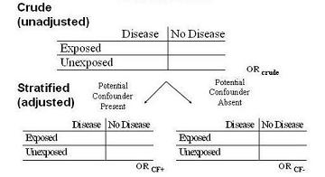

Stratification
Lead Author(s): Jeff Martin, MD
Definition of Stratification
Forming separate strata or groups during study analysis or during study design.
Strata to Determine if Confounding Is Present
To determine if confounding is present we need to look at potential associations (diagram below)

First, we look at the crude or unadjusted estimates,
Second, to determine if confounding is present, we stratify for the potential confounding variable in question by
- forming separate strata for the confounder and
- looking at the association between the exposure and disease in each of these strata separately.
You can determine an odds ratio (OR) separately in each stratum, depicted in this example where the potential confounder:
- is a dichotomous variable with
- OR when the confounder is present
- OR when the confounder is absent
Adjusted Estimate from the Stratified Analyses
If there are multiple confounders, we need to create a stratum for each one.
Goal: Create a single unconfounded ( adjusted) estimate for the relationship in question
- e.g., in the relationship between matches and lung cancer after adjustment ( controlling) for smoking
Process: Summarize the unconfounded estimates from the two (or more) strata to form a single overall unconfounded adjusted estimate
- In this example from a study of smoking, matches, and lung cancer the adjusted odds ratios was based on the summarized data from the smoking stratum (1) and non-smoking stratum (1) into one odds ratio = 1.0
Advantages of Stratification
- Straightforward to implement and comprehend
The primary advantage is that this is a very straightforward and easy to comprehend approach. Many reviewers are phobic of fancy regression models and, hence, stratification, if you can do it is typically very easily understood.
Stratification is also a very easy way to evaluate for the presence of interaction.
Limitations of Stratification
Requires continuous variables to be discretized
- Loses information
- Possibly results in residual confounding
The first limitation is what do we do if we have continuous variables as our exposure or potential confounders, something like age, for example?
- To use stratification, we have to break these continuous variables into categories in order to get them into our contingency tables.
- This unfortunately is not the richest use of continuous data.
- This can result in residual confounding.
Deteriorates with multiple confounders
- For Example, suppose 4 confounders with 3 levels
- 3x3x3x3=81 strata needed
- Unless huge sample, many cells have zeros and strata have undefined effect measures
- You could not perform adjustment.
Solution to Limitations of Stratification
Mathematical modeling (multivariate regression) e.g.
The solution to all of these limitations lies in the use of mathematical models also known as multivariate regression.